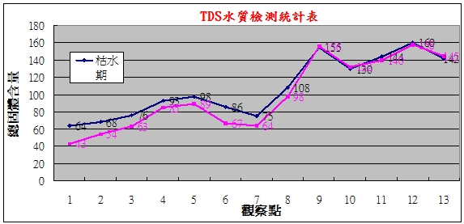

|
>>總固體量TDS |
|
總溶解固體（英文：Total dissolved
solids，縮寫TDS），又稱溶解性固體總量，測量單位為毫克/升（mg/L）,它表明1升水中溶有多少毫克溶解性固體。TDS值越高，表示水中含有的雜質越多。一般可用電導率值大概了解溶液中的鹽份，一般情況下，電導率越高，鹽份越高，TDS越
高。 |
|
TDS溶解於水中的總固體含量（Total
dissolved solids，TDS），以檢驗水質的純淨度檢測水中總溶解固體值（TDS）即檢驗出在水中溶解的各類有機物或無機物的總量TDS超過標準，皆含有大量有害物質(可能包含重金屬 鉛、
銅、鋇、鉻、水銀、鎘)。TDS
值越大，說明水中的污染含量大，反之，污染含量小。
who世界衛生署訂定標準為40ppm以下為合格飲用水。 |
| |
|
TDS檢測結果參考表（ppm） |
|
0∼50 |
軟水 |
50∼100 |
一般硬度 |
100∼200 |
硬水 |
|
200∼400 |
高度硬水 |
400以上 |
超高度硬水 |
|
|
|
| |
|
樹梅坑溪TDS檢測結果 |
|
觀察點 |
1 |
2 |
3 |
4 |
5 |
6 |
7 |
8 |
9 |
10 |
11 |
12 |
13 |
|
枯水期 |
64 |
68 |
76 |
93 |
98 |
86 |
75 |
108 |
155 |
130 |
144 |
160 |
142 |
|
豐水期 |
43 |
54 |
63 |
85 |
89 |
67 |
64 |
98 |
156 |
132 |
140 |
158 |
145 |
|
| |
|
樹梅坑溪TDS檢測統計表 |
|
 |
|
結果分析：豐水期與枯水期源流區（接近軟水）、上游區水質（一般硬水），在中游區 （一般硬水），下游區（硬水），有水質的檢測中發現，越下游的水水質TDS總固體含量越多，水質越差。在豐水期與枯水期的比較，豐水期在源流區、上游區、中游區水質優於枯水期。 |
| |
|
參考資料：總溶解固體。維基百科。 |